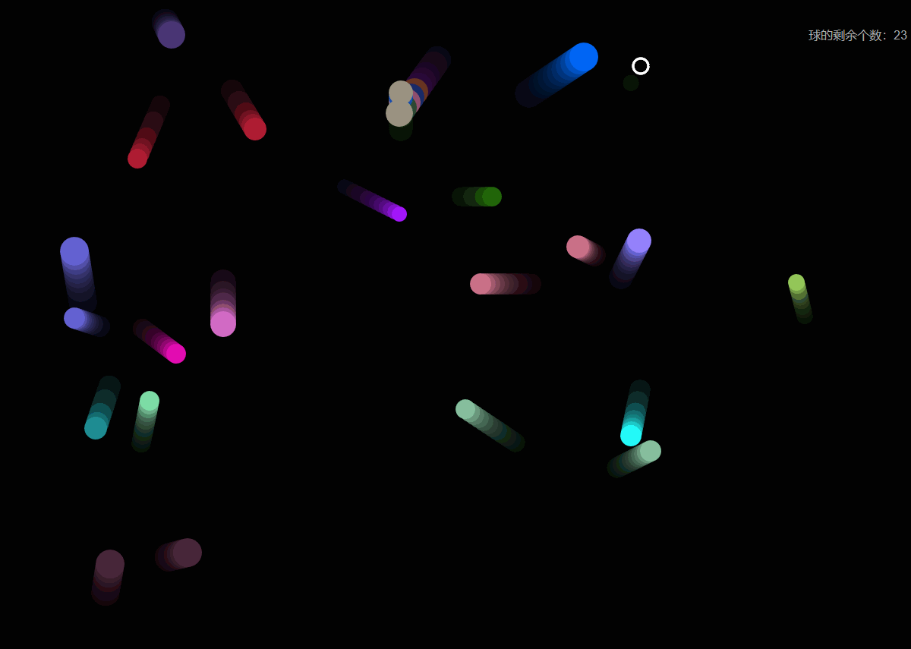
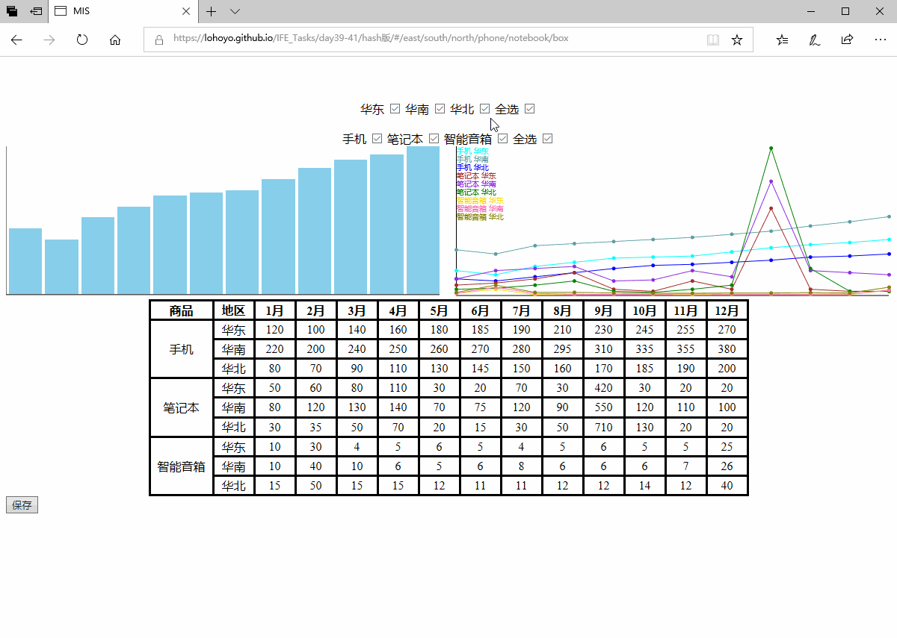
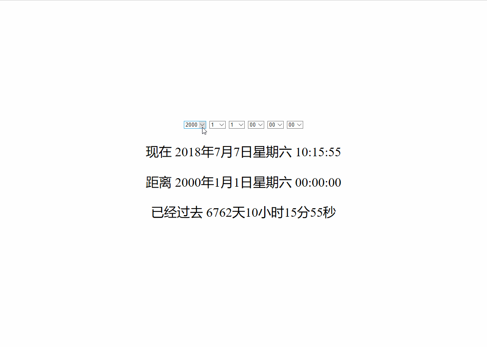
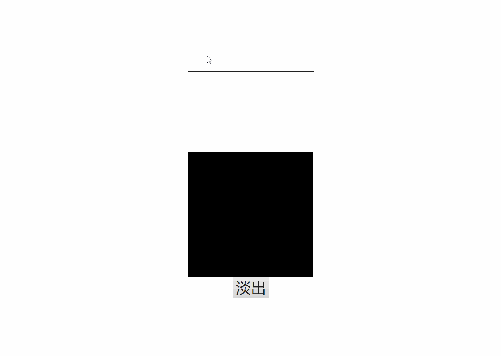
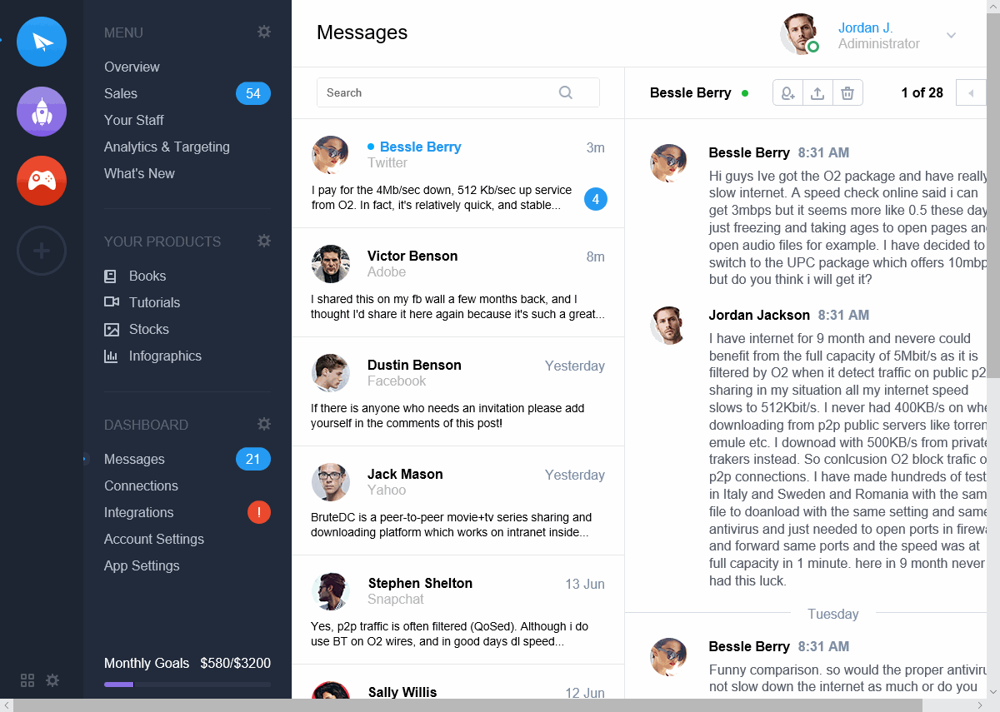

作品展示
以下作品都只使用原生JS、HTML和CSS完成。
把鼠标停在图片上可以预览效果，点击图片可以了解更多。

这是吃球游戏。
球碰到空心圈就会被吃掉，你可以用A、S、D、W键来控制空心圈的移动。注意把输入法切换到英文状态哦。

这是属于MIS的数据报表定制页面。
当鼠标停在某一行数据时，会动态显示该行数据
你可以修改表格中的数据，点击“保存”后下次打开网页时数据会是你修改过的
你把URL复制给其他人后，其他人看到的会是和你相同的复选框状态

这用于动态显示所选时间和当前时间的差值。

这是邮箱输入的提示功能和淡入淡出动画。

这是一个复杂的静态网页。
这是一个漂亮的静态网页。